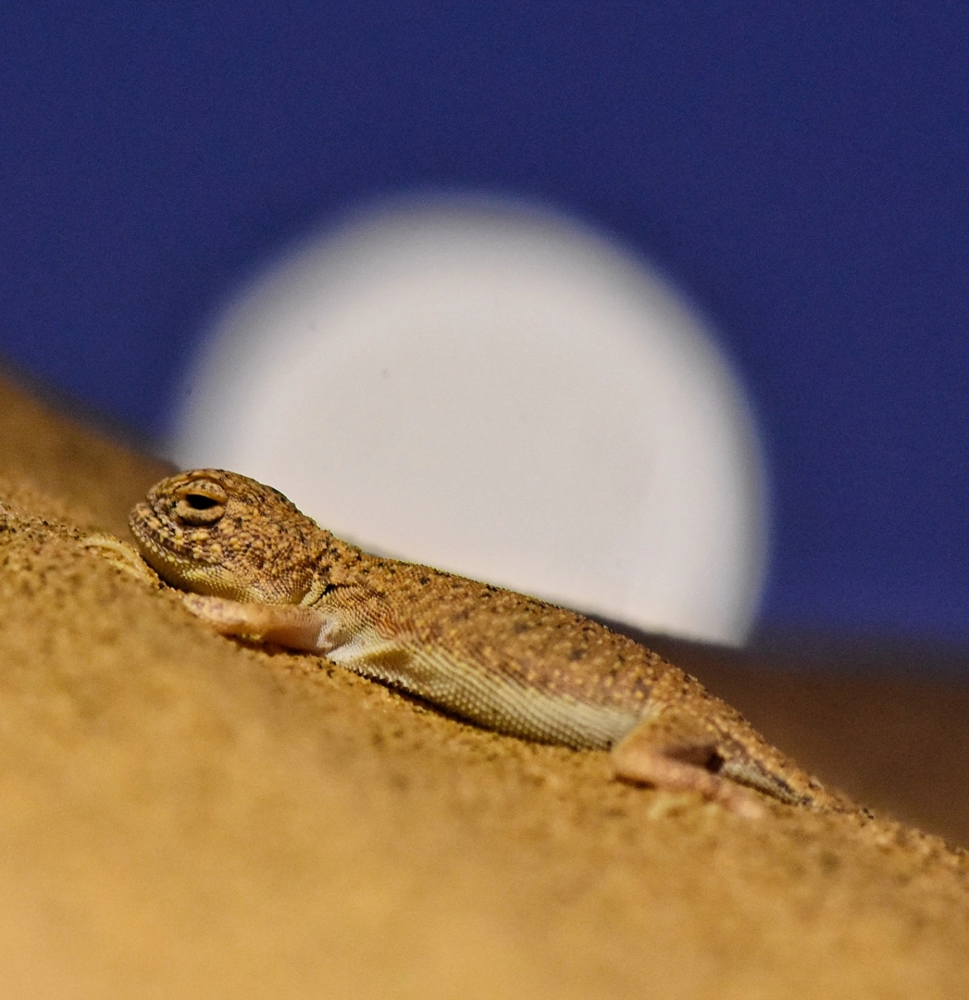
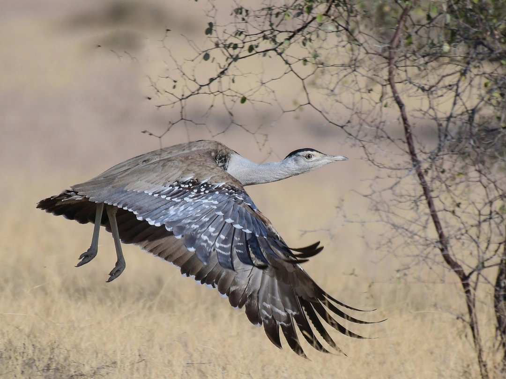

Explore the Magnificence of Desert National Park: A Pristine Oasis Amidst the Thar
Desert
1. Park Location and Geography:The Desert National Park is situated in the
northwestern region of India, specifically in the state of Rajasthan. It spans
across an area of approximately 3,162 square kilometers, making it one of the
largest national parks in the country. The park's geography is characterized by vast
stretches of arid and semi-arid desert landscapes, including sand dunes, rocky
terrains, and salt flats. Its proximity to the city of Jaisalmer, often referred to
as the "Golden City," makes it easily accessible to visitors
The park was gazetted in 1980. The park mostly consists of sand dunes (44%) but also
has pediments, pavements, and structural plains. Desert National Park also has
fossils from the Jurassic Period.
2. Flora of the Desert:The flora of the Desert National Park is a remarkable
testament to nature's resilience in harsh environments. While the arid terrain may
appear barren at first glance, it supports a diverse range of plant species adapted
to survive in extreme conditions. Visitors to the park can witness hardy desert
flora such as thorny bushes, drought-resistant shrubs, and salt-tolerant vegetation.
Habitats that are found in the park include open grassland, thorny bushes, and
dunes. 168 plant species have been recorded in the park. Some species of trees that
inhabit the park include Tecomella undulata, Moringa concanensis, Helitropium
rariflorum, and Ammannie desertorum.
3. Fauna in the Arid Terrain:The arid terrain of the Desert National Park is
a sanctuary for a multitude of wildlife species adapted to the challenging desert
environment. Among the park's residents are the elusive desert fox, Indian wolf, and
desert cat. It's also a habitat for reptiles like the spiny-tailed lizard and
saw-scaled viper. The park's varied landscapes provide shelter to these creatures
and offer a unique opportunity for wildlife enthusiasts to spot them in their
natural habitat.
The Chinkara or Indian Gazelle (Gazella bennettii) is a common
antelope of this region. The national park's other notable inhabitants are the
desert fox, wolf and desert cat. Birdlife in this sandy habitat is vivid and
spectacular. Birds such as sandgrouse, partridges, bee-eaters, larks, and shrikes
are commonly seen. In the winter, the birdlife is augmented by species such as the
demoiselle crane and MacQueen's bustard. Perhaps the greatest attraction of the park
is a bird called the great Indian bustard, a critically endangered species found
only in India. Desert National Park is one of the last sites in which this species
can be found in good numbers. As such, the species draws in thousands of
birdwatchers from all over the world. In addition to the great Indian bustard, the
park supports a variety of other birds of interest to birdwatchers and
conservationists alike. The Thar Desert, often called an 'ocean of sand', covers a
large area of western Rajasthan. The fragile ecosystem of the Thar supports unique
and varied wildlife. In this vast ocean of sands lies the famous Desert National
Park, which provides an excellent example of the ecosystem of the Thar Desert and
its diverse wildlife adventure. The vegetation is sparse, and patches of sewan grass
and aak shrub (Calotropis) can be seen. The landscape includes craggy rocks and
compact salt lake bottoms, as well as intermediate areas and both fixed and shifting
dunes. Around 20 percent of the vast expanse is covered with sand dunes.
Mammals: desert fox, Bengal fox, desert cat, wolf, hedgehog, chinkara. Reptiles: spiny-tailed lizard, monitor lizard, saw-scaled viper, Russell's
viper, common krait.
Avifauna: sandgrouse, Indian bustard, partridges, bee-eaters, larks and
shrikes are year-round residents, while demoiselle crane and houbara bustard arrive
in winter. Raptors include tawny and steppe eagles, long-legged and honey buzzards,
and falcons.
4. Avian Diversity:The Desert National Park is a birdwatcher's paradise,
boasting a rich avian diversity. It serves as a critical habitat for numerous
resident and migratory bird species. One of its most celebrated residents is the
Great Indian Bustard (GIB), a critically endangered bird. Apart from GIB, visitors
can spot birds like the endangered houbara bustard, raptors like eagles and falcons,
and a wide array of waterfowl during the winter months when migratory birds make the
park their temporary home.
5. Safari Adventures:Safari adventures in the Desert National Park offer
visitors a chance to explore the rugged beauty of the desert. Jeep safaris are a
popular way to traverse the sand dunes and encounter the park's wildlife. These
excursions often lead to sightings of desert animals and offer the thrill of
navigating the undulating dunes. Additionally, camel safaris are a quintessential
desert experience, allowing travelers to immerse themselves in the tranquil desert
ambiance.
6. Desert's Nocturnal Wonders: As the sun sets over the desert, a whole new
world comes alive. The Desert National Park is home to an intriguing array of
nocturnal creatures that thrive in the cooler night temperatures. Visitors can
embark on guided night safaris to witness the fascinating behavior of creatures like
desert gerbils, desert cats, and various species of owls. The serene desert night
sky adds to the mystique, making it a memorable experience
7. Stargazing Marvels:The remote location of the park away from urban light
pollution provides an exceptional opportunity for stargazing enthusiasts. On clear
desert nights, the celestial canopy reveals an awe-inspiring display of stars,
planets, and constellations. Stargazers can set up their telescopes or simply lay
back on the sand dunes to marvel at the breathtaking night sky.
8. Immersive Desert Camps: To complete the desert experience, many tourists
opt for immersive desert camps located within and around the park. These camps offer
a taste of traditional Rajasthani hospitality, with accommodations ranging from
luxury tents to rustic desert huts. Visitors can savor local cuisine, enjoy
traditional folk music and dance performances, and take part in activities like
camel rides and desert treks.
9. Conservation Efforts:The Desert National Park plays a pivotal role in the
conservation of the unique biodiversity of the Thar Desert. Efforts are ongoing to
protect endangered species like the Great Indian Bustard and their fragile habitats.
Conservationists work hand in hand with government agencies to implement strategies
for habitat restoration, anti-poaching measures, and community engagement to ensure
the long-term survival of the park's wildlife.
10. Visitor Information and Permits: Before embarking on a journey to the
Desert National Park, visitors should be aware of the permits and regulations in
place. Entry permits are typically required, and these can be obtained from
designated offices or online platforms. It's essential to adhere to park guidelines
to minimize human impact on the delicate desert ecosystem. Knowledgeable local
guides and tour operators can help plan a safe and enjoyable visit while respecting
the park's natural wonders.
Gallery of Desert National Park through radhe's lens

Desert National Park Jaisalmer Timings
Day
Timing
Monday
Sunrise to Sunset
Tuesday
Sunrise to Sunset
Wednesday
Sunrise to Sunset
Thursday
Sunrise to Sunset
Friday
Sunrise to Sunset
Saturday
Sunrise to Sunset
Sunday
Sunrise to Sunset
How to Reach Desert National Parks
The Desert National Park of Jaisalmer is easily accessible via airplane, train, bus,
and road. Below are the best suitable modes of transportation for you.
By Air: Jaisalmer is the nearest airport located 40 KMS from the
park. For more flight option The nearest airport to Desert National Park is Jodhpur
Airport, 300 km away. Taxis are easily available from the airport to the national
park.
By Train: The Jaisalmer train station is located just over 30 km away
from the park, making it another convenient option for visitors. The station offers
several trains to major cities around the country, so it's easy to find a train that
works for your travel plans. Once you arrive in the city, it's a short drive to the
park.
By Road: For those looking for a more affordable way to reach Desert
National Park Jaisalmer, there are several bus options. Several bus companies offer
daily trips from nearby cities to the park. These buses are usually cheaper than
flying or taking a train, so they're a great option for budget travelers.
Finally, if you're feeling adventurous, you can always take a road trip to Desert
National Park. The park is located in a very remote region of India, so it's a great
place to explore by car. You can take your vehicle or rent one from the best car
rentals in Jaisalmer, and there are plenty of scenic routes that you can take to get
to the park.
It's quite rare to come across a national park in the middle of a desert, but that's
exactly what you'll find in Jaisalmer, Rajasthan, India. The park's stunning and
diverse landscape is truly a wonder to behold, especially considering the harsh
conditions of its surroundings. Despite the challenges, this national park manages to
thrive and offer visitors a unique and unforgettable experience.
Best Time to Visit Desert National Park
Winter Wonderland (November to February):
During this season, daytime temperatures are pleasantly cool, ranging from 15°C to
25°C (59°F to 77°F), making outdoor activities enjoyable. The crisp winter air
enhances wildlife sightings, especially for birdwatchers.
Spring Awakening (March to April):
Spring marks the transition from winter to summer. The temperatures gradually rise,
making it a comfortable time for exploration. The desert landscape comes alive with
vibrant blooms.
Summer Adventures (May to August):
While summer months can be scorching with temperatures above 40°C (104°F) or higher,
it presents a unique opportunity for those seeking an adventure in extreme
conditions. You can explore the park's stark landscapes and still encounter wildlife
adapted to the heat.
Monsoon Magic (July to September):
The monsoon season brings a touch of green to the desert, coaxing some greenery from
the arid soil. The park takes on a mystical aura as dark monsoon clouds contrast
with golden sands.
Autumn Tranquility (October):
As the monsoon recedes, October offers a sense of tranquility. The weather is cooler
than summer, and the landscape still carries hints of greenery from the rains. Ideal
for photography and peaceful experiences.
Ultimately, the best time to visit Desert National Park depends on your preferences
and what you hope to experience. Whether you seek the vibrancy of winter, the
blossoming of spring, the challenge of summer, the allure of monsoon, or the
tranquility of autumn, the park offers a unique encounter with the desert's
ever-changing beauty and wildlife.
Category
Information
Name
Desert National Park
Location
Jaisalmer, Rajasthan, India
Established
1980
Area
3,162 square kilometers (1,220 square miles)
Climate
Extreme desert climate with hot summers and cold winters
Flora
Thorny scrub, succulents, and desert vegetation and more
Fauna
Great Indian Bustard, Desert Fox, Indian Gazelle, and more
Avian Species
Over 120 species of birds
Special Features
Stargazing, unique desert landscapes, and nocturnal wildlife
Visitor Attractions
Wildlife safaris, birdwatching, and desert camping
Conservation Efforts
Protection of endangered species and their habitats
Accessibility
Well-connected by road, nearest airport is Jodhpur Airport
Wildlife Diversity
Home to various reptiles, insects, and small mammals in addition to its iconic
species
Floral Diversity
Unique desert flora including species like the Rohida and the Kair
Geological Features
Rich geological formations and sand dunes
Local Culture
Opportunities to experience local Rajasthani culture and traditions
Conservation Status
Designated as a protected area to conserve its fragile ecosystem
Best Time to Visit
October to March for pleasant weather and wildlife sightings
Entry Fees
Varies for Indian and foreign tourists, additional charges for cameras
Accommodation
Options for accommodations include hotels and desert camps
Checklist of Birds
Name Of The Birds
Scientific Name
Status
Great Indian Bustard
Ardeotis nigriceps
Critically Endangered
Asian Houbara/Macqueen Bustard
Chlamydotis macqueenii
Vulnerable
Cream Coloured Courser
Cursorius cursor
Uncommon
Tawny Eagle
Aquila rapax
Uncommon
Eastern Imperial Eagle
Aquila heliaca
Vulnerable
Booted Eagle
Hieraaetus pennatus
Uncommon
Bonelli's Eagle
Aquila fasciata
Uncommon
Greater Spotted Eagle
Aquila clanga
Vulnerable
Indian Spotted Eagle
Clanga hastata
Vulnerable
Short-toed Snake Eagle
Circaetus gallicus
Common
Red Headed Vulture
Sarcogyps calvus
Critically Endangered
White Rumped Vulture
Gyps bengalensis
Critically Endangered
Indian Vulture/Long Billed Vulture
Gyps indicus
Critically Endangered
Egyptian Vulture
Neophron percnopterus
Endangered
Eurasian Griffon Vulture
Gyps fulvus
Uncommon
Himalayan Vulture
Gyps himalayensis
Near Threatened
Cinereous Vulture
Aegypius monachus
Near Threatened
Laggar Falcon
Falco jugger
Uncommon
Red Necked Falcon
Falco chicquera
Common
Merlin
Falco columbarius
Uncommon
Eurasian Sparrowhawk
Accipiter nisus
Common
Sikara
Accipiter badius
Common
Demoiselle Crane
Grus virgo
Common
Common Crane
Grus grus
Common
Long Legged Buzzard
Buteo rufinus
Common
White Eyed Buzzard
Butastur teesa
Common
Common Buzzard
Buteo buteo
Common
Montagu's Harrier
Circus pygargus
Uncommon
Pallid Harrier
Circus macrourus
Near Threatened
Marsh Harrier
Circus aeruginosus
Common
Eurasian Eagle-Owl
Bubo bubo
Common
Short-Eared Owl
Asio flammeus
Common
Barn Owl
Tyto alba
Common
Spotted Owlet
Athene brama
Common
Indian Courser
Cursorius coromandelicus
Common
Sociable Lapwing
Vanellus gregarius
Critically Endangered
White Tailed Lapwing
Vanellus leucurus
Uncommon
Red Wattled Lapwing
Vanellus indicus
Common
Indian Thick-Knee
Burhinus indicus
Common
CHECKLIST OF MAMMALS
Name Of The Mammals
Scientific Name
Status
Chinkara
Gazella bennettii
Common
Desert Fox
Vulpus vulpus pusilla
Rare Endangered
Indian Fox
Vulpus bengalensis
Uncommon
Desert Cat
Felis sylvestris
Rare
Nilgai (Blue Bull)
Boselaphus tragocamelus
Common
Wild Boar
Sus scrofa
Common
Indian Grey Mongoose
Herpestes edwardsii
Uncommon
Hedgehog
Hemiechinus micropus
Uncommon
Indian Desert Jird
Meriones hurrianae
Common
Checklist of Reptiles
Name Of The Reptiles
Scientific Name
Status
Spiny Tailed Lizard
Uromastyx hardwickii
Common
Desert Monitor Lizard
Varanus griseus
Common
Bengal Monitor Lizard
Varanus bengalensis
Common
Brilliant Agama Lizard
Trapelus agilis
Common
Garden Lizard
Calotes versicolor
Common
Sind Sand Gecko
Crossobamon orientalis
Rare
Rock Killed Gecko
Hemidactylus maculatus
Common
Macro/Person Gecko
Gekkonidae
Rare
Toed Headed Agama
Phrynocephalus mystaceus
Common
Saw-Scaled Vipers
Echis carinatus
Common
Red Spotted Royal Snake
Spalerosophis arenarius
Uncommon
Awl Headed Snake
Crowned Leafnose Snake
Rare
Indian Cobra
Naja naja
Common
Glossy Bellied Racer
Coluber ventromaculatus
Rare
Sind Krait
Bungarus sindianus walli
Rare
Indian Krait
Bungarus caeruleus
Uncommon
Red Sand Boa
Eryx johnii
Common
Sand Fish
Scincus scincus
Common
Image Gallery of Desert National Park through radhe's lens

Call To Action
Ready For Unforgatable Travel. Remember Us!
"Prepared to Immerse in Unforgettable Thar Desert Exploration ?
Let Your Journey Echo Our Warmth and Expertise Forever."